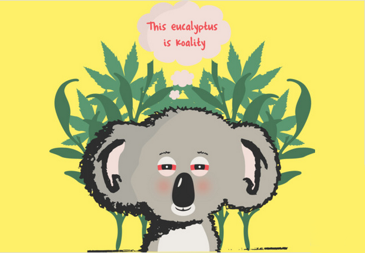

I adore all animals, and while some of them are intelligent enough to know better, some only want to win the Dumbest Animal Award. Like humans, the presence of a brain does not preclude the presence of mental agility. Unmistakably proving that animals can be just as foolish as humans are the animals in the entries explored. These entries provide us the chance to ponder why and how while taking a fun look at some of the less-than-intelligent traits of animals.
First of all, we must look at these creatures with wonder casue they're so adoarble!
To get started, let's begin with a few general Koala facts.
We love to observe these beauties from Australia, the iconic marsupial, the koala or in more technical terms- Phascolarctos cinereus. Slowly it's becoming really hard to see wild koalas in their native habitat, but from time to time we manage to find them by following the weird roars of the male. (I can't let this go unseen, there's a video below)
To list a few more interesting facts:
Now for the intellectual material. In comparison to other mammals, the koala has one of the lowest brain-to-body mass ratios. Koalas have lasted despite their stupidity because their brains use little energy. So essentally their brains are really small and because they treat themselves to toxic ecualyptus leaves,low on nutriton and energy, they operate on really low energy, which would explain the sleep that lasts for over 90% of the day! This also exaplins why their brain levels are said to be the equivalent of being high all the time.
So the point is, Koalas just have small, weak brains BUT- supposedly a lot of researchers believe that the ancestors of the modern-day koala once had a genuine brain- as in… a full-sized brain that filled the cranium (fancy term for bones that make up your head).One scientist, Tim Flannery, boldly insulted these cute-a** creatures right off the bat: “Its hemispheres sit like a pair of shriveled walnut halves on top of the brain stem, in contact neither with each other nor the bones of the skull.” Koalas might be cute, but what's inside the skull doesn't sound very impressive”
Yeah so we know, koalas are not too bright, but hey! They're resourceful- they expend as little energy as possible, spending roughly 18-20 hours per day sleeping. From their resting place to the food source and back, they travel slowly and carefully.
Since the numerous Indigenous peoples of the Australian mainland have used fire for thousands of years, the soils have lost more nutrients. (The correct title would be "Aboriginals.") Additionally, eucalypt plants are more suited than non-sclerophyllous species to enduring traditional Aboriginal fire practices. These plants can survive in dry environments.
Most of these plants feature poisonous and indigestible chemicals that protects the leaves in addition to having poor nutritional value. For instance, the leaves of gum trees contain potent, volatile eucalypt oils that make them unpleasant to most mammals. Obviously, the koala is an exception.
So the money making question is:
Koalas had no alternative but to eat the nasty eucalyptus tree leaves in order to survive thanks to the fires' disruption of the vegetation. Koalas faced selection pressure from generation to generation, and only those who could survive on such a poor meal source would pass on their genes, guaranteeing the survival of the species despite relentless constant change.
Eucalyptus leaves are not only poisonous to the majority of animals, but they also have very little nutritional value. Koalas are quite picky and will concentrate on eucalypt species that have the ideal ratio of less harmful chemicals and more nutritious nutrients. (So not entirely stupid, eh?)
Their brains evolved to become incredibly small (the ratio of brain to body mass is the smallest in all animals) and this because of their constant diet of poison leaves. They can eat other foods, but poison leaves are apparently their favorite now. Hence, it makes them incredibly lazy, not to mention some are said to have difficulty in recognizing what their food is and so will starve to death. They also are very low in hygiene and presumably kinda sex-driven causing a wide spread of the STD.
One thing is for certain: the koala has grown with the ability to handle severe environments for thousands of years. It turns out that one of its successful adaptations is being stupid.